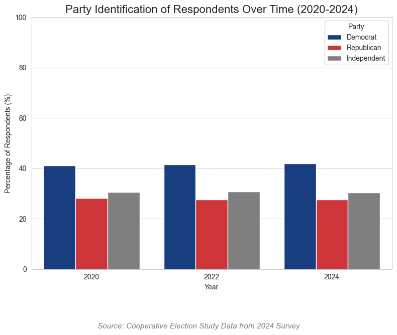
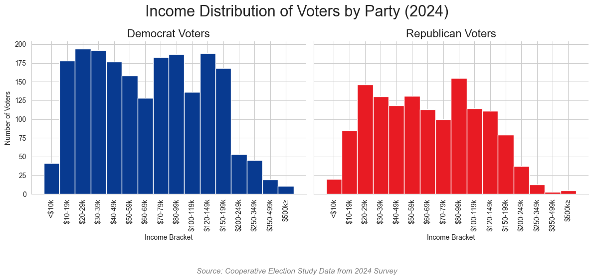
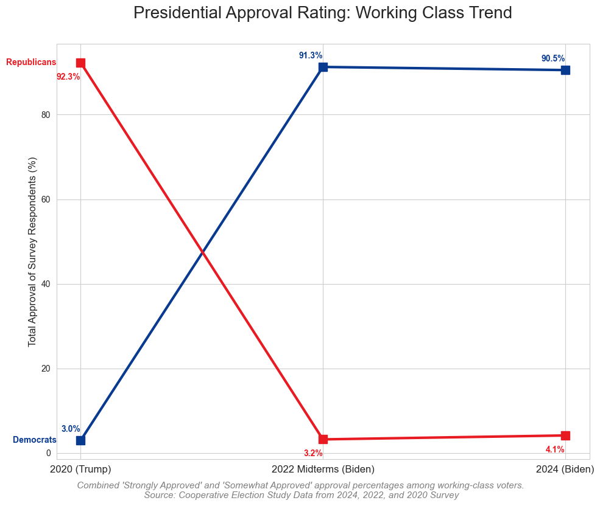
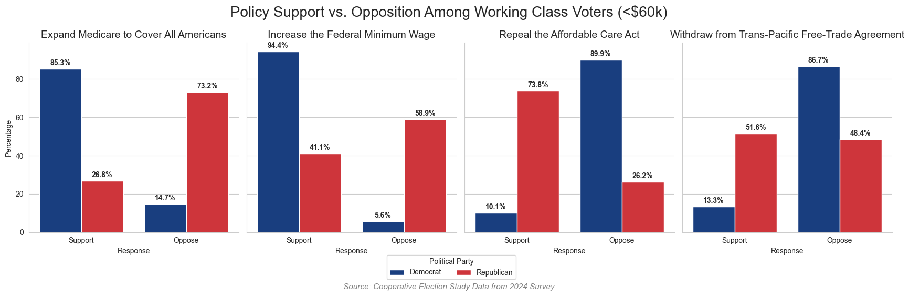
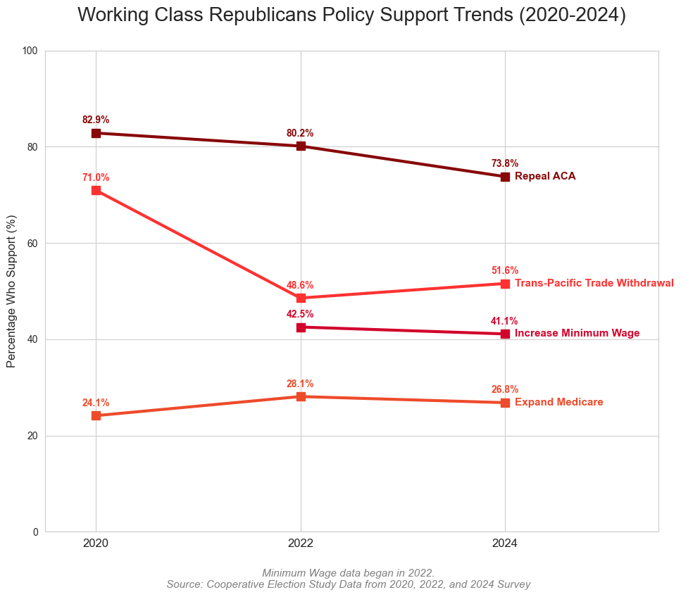
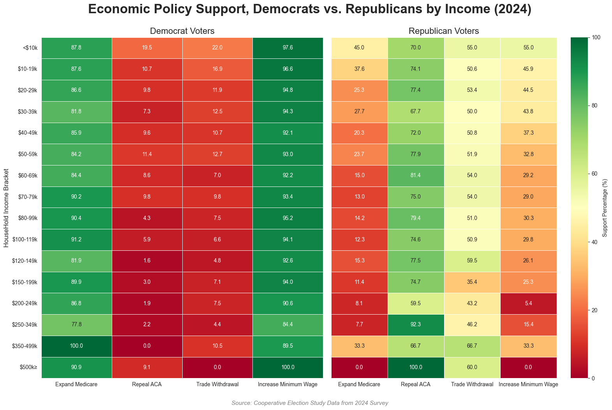

Code
import os, numpy as np, pandas as pd, matplotlib.pyplot as plt, math, seaborn as snsAs polarization has grown in US politics, a small trend has emerged in voting behavior. Typically, voters in the working class (<$59k income) tend to affiliate themselves with the Democratic Party. This relates to historical contexts in which the Democratic Party was created to represent the working class, predominantly in the American South. Today, the Democratic Party continues to work towards goals of improvement for the working class; however, not all members of the working class continue to support the Democrats. There has been an increasingly large shift in the way working class voters tend to vote, with a large proportion of them affiliating with the Republican Party. Rational Choice Theorists have a hard time defending this sudden shift in voter ideology, despite the policies of both parties remaining constant (Democrats for the working class, Republicans for the upper class). This project looks to assess the trends of the way the working class votes on policies that are produced by the Democratic Party and would otherwise benefit working class voters, to see if the trend exists and how large it is.
import os, numpy as np, pandas as pd, matplotlib.pyplot as plt, math, seaborn as sns# import data
my_cols = ['pid3_24', 'pid3_22', 'pid3_20','CC24_320a', 'CC22_320a', 'CC20_320a', 'RC24_327a', 'CC22_327a', 'CC20_327a', 'faminc_new_24', 'RC24_355d', 'CC22_355d', 'RC24_327c', 'CC22_327c', 'CC20_327d', 'CC20_355b_24', 'CC20_355b_22', 'CC20_355b_20']
df = pd.read_csv('merged_recontact_2024_vv.csv', low_memory = False, usecols = my_cols)
# Cleaning up values in columns I don't need
party_id = ['pid3_24', 'pid3_22', 'pid3_20']
pres_approval = ['CC24_320a', 'CC22_320a', 'CC20_320a']
healthcare = ['RC24_327a', 'CC22_327a', 'CC20_327a']
income = ['faminc_new_24']
min_wage = ['RC24_355d', 'CC22_355d']
aca = ['RC24_327c', 'CC22_327c', 'CC20_327d']
free_trade = ['CC20_355b_24', 'CC20_355b_22', 'CC20_355b_20']
ces = df[
(~df[party_id].isin([4, 5, 6])).all(axis=1) &
(~df[pres_approval].isin([5, 6])).all(axis=1) &
(~df[healthcare].isin([3])).all(axis=1) &
(~df[income].isin([17, 97])).all(axis=1) &
(~df[aca].isin([3])).all(axis=1) &
(~df[free_trade].isin([3])).all(axis=1)
]
all_cols_to_clean = party_id + pres_approval + healthcare + income + min_wage + aca + free_trade
ces = ces.dropna(subset=all_cols_to_clean)
# Renaming columns
ces = ces.rename(columns={
'pid3_24': 'party_24',
'pid3_22': 'party_22',
'pid3_20': 'party_20',
'CC24_320a': 'pres_24',
'CC22_320a': 'pres_22',
'CC20_320a': 'pres_20',
'RC24_327a': 'health_24',
'CC22_327a': 'health_22',
'CC20_327a': 'health_20',
'faminc_new_24': 'income',
'RC24_355d': 'minwage_24',
'CC22_355d': 'minwage_22',
'RC24_327c': 'aca_24',
'CC22_327c': 'aca_22',
'CC20_327d': 'aca_20',
'CC20_355b_24': 'trade_24',
'CC20_355b_22': 'trade_22',
'CC20_355b_20': 'trade_20'
})
# new csv to see what came out of that
ces.to_csv('cleaned_data.csv', index=False)These graph shows the results of the survey participants, and their self-identified political affiliations and income status. The Cooperative Election Study (CES) survey uses a representative sample of US voters, thus showing a general composition of the ratio of voters within each political party. Members in the Independent category are a mix of third-party voters, as well as those who self-identify as Independent.
This chart shows how self-identified political affiliations have changed from 2020 to 2024. Though subtle, there is a slight increase in survey respondents who identified as Democrats between this time frame. The number of Republicans and Independents has remained roughly constant. 2020 survey respondents were still under the Trump Administration, while 2022-2024 respondents were under the Biden Administration.
ces = pd.read_csv('cleaned_data.csv')
party_cols = ['party_20', 'party_22', 'party_24']
ces_long = ces[party_cols].melt(var_name = 'Year_raw', value_name = 'Party_code')
year_map = {'party_20': '2020', 'party_22': '2022', 'party_24': '2024'}
party_map = {1: 'Democrat', 2: 'Republican', 3: 'Independent'}
ces_long['Year'] = ces_long['Year_raw'].map(year_map)
ces_long['Party'] = ces_long['Party_code'].map(party_map)
counts = ces_long.groupby(['Year', 'Party']).size().reset_index(name='Count')
totals = ces_long.groupby('Year').size().reset_index(name='Total')
summary = counts.merge(totals, on='Year')
summary['Percentage'] = (summary['Count'] / summary['Total']) * 100
plt.figure(figsize=(8,6))
sns.set_style("whitegrid")
sns.barplot(
data = summary,
x = 'Year',
y = 'Percentage',
hue = 'Party',
hue_order = ['Democrat', 'Republican', 'Independent'],
palette = {'Democrat': '#083A90', 'Republican': '#E81B23', 'Independent': '#7f7f7f'}
)
plt.title('Party Identification of Respondents Over Time (2020-2024)', fontsize = 16)
plt.ylabel('Percentage of Respondents (%)')
plt.ylim(0,100)
caption = ('Source: Cooperative Election Study Data from 2024 Survey')
plt.figtext(0.5, -0.1, caption, ha="center", fontsize=11, style='italic', color='gray')
plt.tight_layout()
plt.show()
This chart shows the average family income bracket in the Democratic and Republican parties in 2024. Looking at the first version of the histogram, it is hard to understand what is going on between income levels.
plot_df = ces[ces['party_24'].isin([1,2])].copy()
plot_df['Party'] = plot_df['party_24'].map({1: 'Democrat', 2: 'Republican'})
income_labels = [
"<$10k", "$10-19k", "$20-29k", "$30-39k", "$40-49k", "$50-59k",
"$60-69k", "$70-79k", "$80-99k", "$100-119k", "$120-149k", "$150-199k",
"$200-249k", "$250-349k", "$350-499k", "$500k≥"]
dem_mean = plot_df[plot_df['Party'] == 'Democrat']['income'].mean()
rep_mean = plot_df[plot_df['Party'] == 'Republican']['income'].mean()
g = sns.FacetGrid(
plot_df,
col = "Party",
hue = "Party",
palette = {'Democrat': '#083A90', 'Republican': '#E81B23'},
height = 5,
aspect = 1.2
)
plt.suptitle('Income Distribution of Voters by Party (2024)', fontsize = 22)
g.set_titles("{col_name} Voters", size=16)
g.map(sns.histplot, "income", bins = range(1,18), discrete = True, alpha = 1, edgecolor = 'white')
g.set_axis_labels("Income Bracket", "Number of Voters")
g.set(xticks = range(1,17))
g.set_xticklabels(income_labels, rotation = 90)
caption = ('Source: Cooperative Election Study Data from 2024 Survey')
plt.figtext(0.5, -0.1, caption, ha="center", fontsize=11, style='italic', color='gray')
plt.tight_layout()
plt.show()
In Version 2, the story of income and party affiliation is much clearer. Both groups had an average household income between $60k-69k. This aligns with the belief of a majority of the US being in the middle/working class. Comparing the two parties, the Democratic Party contains more voters in the upper-middle and upper classes than the Republican Party. This does not align with historical trends and party purposes, as in previous years, the Democratic Party was more aligned with the middle and working classes, while the Republican Party was more aligned with the upper-middle and upper classes. This indicates a shift in party composition with where the middle and working class tend to affiliate themselves.
plot_df = ces[ces['party_24'].isin([1,2])].copy()
plot_df['Party'] = plot_df['party_24'].map({1: 'Democrat', 2: 'Republican'})
income_labels = [
"<$10k", "$10-19k", "$20-29k", "$30-39k", "$40-49k", "$50-59k",
"$60-69k", "$70-79k", "$80-99k", "$100-119k", "$120-149k", "$150-199k",
"$200-249k", "$250-349k", "$350-499k", "$500k≥"]
dem_mean = plot_df[plot_df['Party'] == 'Democrat']['income'].mean()
rep_mean = plot_df[plot_df['Party'] == 'Republican']['income'].mean()
g = sns.FacetGrid(
plot_df,
col = "Party",
hue = "Party",
palette = {'Democrat': '#083A90', 'Republican': '#E81B23'},
height = 5,
aspect = 1.2
)
plt.suptitle('Income Distribution of Voters by Party (2024)', fontsize = 22)
g.set_titles("{col_name} Voters", size=16)
g.map(sns.histplot, "income", bins = range(1,18), discrete = True, alpha = 0.7, edgecolor = 'white')
#asked Gemini for help to add a trendline to show where the average voter is in each party + color the bar differently
for ax, party in zip(g.axes.flat, ['Democrat', 'Republican']):
mean_val = dem_mean if party == 'Democrat' else rep_mean
mean_bracket = int(round(mean_val)) # The bracket where the average sits
ax.axvline(mean_val, color='black', linestyle='--', linewidth=1, zorder=3)
# Find the bar for the mean bracket and change its color
for patch in ax.patches:
# Check if this bar's center matches our mean bracket
if abs(patch.get_x() + patch.get_width()/2 - mean_bracket) < 0.1:
patch.set_facecolor('#EFBF04')
patch.set_alpha(1.0) # Full opacity to make it pop
patch.set_edgecolor('black')
patch.set_linewidth(1.0)
# Add text annotation
ax.text(mean_val + 0.2, ax.get_ylim()[1] * 0.93, f'Income Group: {mean_bracket}',
color='black', style = 'italic', fontsize=10)
g.set_axis_labels("Income Bracket", "Number of Voters")
g.set(xticks = range(1,17))
g.set_xticklabels(income_labels, rotation = 90)
caption = ('Source: Cooperative Election Study Data from 2024 Survey')
plt.figtext(0.5, -0.1, caption, ha="center", fontsize=11, style='italic', color='gray')
plt.tight_layout()
plt.show()This graph indicates the overall approval rating of each President at the end of Trump’s first term, the midterm of Biden’s term, and the end of Biden’s term for working class voters of both parties. The data was originally gathered on a scale of “Strongly Approve, Somewhat Approve, Somewhat Disapprove, and Strongly Disapprove.” These results were then turned into a percentage to better represent how working class voters felt about each President. Despite the dramatic flip in Approval Ratings when Trump left office, there is still a strong sense of party loyalty among working class voters. This is typically unusual, as the Democratic Party tends to work on passing economic policy that benefits the working class. Rational Choice models of political behavior would predict that the approval rating for working class voters would remain high when the Democratic Party holds the Executive Branch, as they approve and advocate for more policies relating to improving economic conditions for the working class. This is usually shown in key policy ideas regarding expanding healthcare, decreasing free trade, and increasing the federal minimum wage.
# 1. Filter for working class (Income <= 6)
working_class = ces[ces['income'] <= 6].copy()
# Needed a lot of help here converting the data into percentages (my data values corresponded to a value on a Likert scale)
def get_approval_percentage(data, party_col, approval_col, party_id):
party_group = data[data[party_col] == party_id]
approvers = party_group[approval_col].isin([1, 2]).sum()
total = len(party_group)
return (approvers / total) * 100 if total > 0 else 0
years = [2020, 2022, 2024]
dem_trend = [
get_approval_percentage(working_class, 'party_20', 'pres_20', 1),
get_approval_percentage(working_class, 'party_22', 'pres_22', 1),
get_approval_percentage(working_class, 'party_24', 'pres_24', 1)
]
rep_trend = [
get_approval_percentage(working_class, 'party_20', 'pres_20', 2),
get_approval_percentage(working_class, 'party_22', 'pres_22', 2),
get_approval_percentage(working_class, 'party_24', 'pres_24', 2)
]
# Graphing
plt.figure(figsize=(10, 8))
plt.plot(years, dem_trend, marker='s', color='#083A90', linewidth=3, markersize=10, label='Democrats')
plt.plot(years, rep_trend, marker='s', color='#E81B23', linewidth=3, markersize=10, label='Republicans')
for i, val in enumerate(dem_trend):
plt.text(years[i], val + 2, f'{val:.1f}%', color='#083A90', fontweight='bold', ha='right')
for i, val in enumerate(rep_trend):
plt.text(years[i], val - 4, f'{val:.1f}%', color='#E81B23', fontweight='bold', ha='right')
#Labeling
plt.title('Presidential Approval Rating: Working Class Trend', fontsize=20, pad=30)
plt.ylabel('Total Approval of Survey Respondents (%)', fontsize=12)
plt.xticks(years, ['2020 (Trump)', '2022 Midterms (Biden)', '2024 (Biden)'], fontsize=12)
plt.text(2019.8, dem_trend[0], 'Democrats', color='#083A90', fontweight='bold', ha='right', va='center')
plt.text(2019.8, rep_trend[0], 'Republicans', color='#E81B23', fontweight='bold', ha='right', va='center')
caption = "Combined 'Strongly Approved' and 'Somewhat Approved' approval percentages among working-class voters. \nSource: Cooperative Election Study Data from 2024, 2022, and 2020 Survey"
plt.figtext(0.5, -0.03, caption, ha="center", fontsize=11, style='italic', color='gray')
plt.tight_layout()
plt.show()
The economic policies under consideration are as follows:
Rational Choice Theory would predict that all working class voters would have a high support percentage for Expanding Medicare, Increasing the Federal Minimum Wage, and Withdrawal from the Trans-Pacific Free Trade Agreement, but a low support percentage for Repealing the ACA. This is because repealing access to free/reduced-cost healthcare would negatively impact working class members from gaining access to healthcare at all. Expanding Medicare and Increasing the Federal Minimum Wage would cause direct, positive impacts on working class members by increasing their access to healthcare and the overall wage minimum for a significant portion of blue-collar workers (who predominantly make up the working class). Free trade agreements are highly contested, but many argue that leaving the Trans-Pacific Trade Agreement could bring back manufacturing jobs to the US, thus increasing job opportunities for the working class.
These charts show the overall support and opposition trends for economic policy between parties. The Democratic Party tends to support expanding Medicare, protecting the ACA, increasing the minimum wage, but strongly opposes leaving free-trade agreements. On the other hand, the Republican Party tends to support repealing the ACA and not expanding Medicare, but has mixed feelings about increasing the minimum wage and free-trade agreements. The response from both parties about trade agreements could be explained by the historic trend to promote American isolationism, but the fact that decreased trade could increase the cost of consumer goods that are otherwise imported. As for minimum wage, more Republicans working class voters could support it because it is their main source of income.
wc_data = ces[(ces['income'] <= 6) & (ces['party_24'].isin([1,2]))].copy()
wc_data['Party'] = wc_data['party_24'].map({1:'Democrat', 2:'Republican'})
policies = {
'health_24': 'Expand Medicare to Cover All Americans',
'aca_24': 'Repeal the Affordable Care Act',
'trade_24': 'Withdraw from Trans-Pacific Free-Trade Agreement',
'minwage_24': 'Increase the Federal Minimum Wage'
}
long_df = wc_data.melt(
id_vars = ['Party'],
value_vars = list(policies.keys()),
var_name = 'Policy_id', value_name = 'Rating'
)
long_df['Policy'] = long_df['Policy_id'].map(policies)
long_df['Response'] = long_df['Rating'].map({1: 'Support', 2: 'Oppose'})
# Got help to turn data into percentages for response
counts = long_df.groupby(['Policy', 'Party', 'Response']).size().reset_index(name='count')
totals = long_df.groupby(['Policy', 'Party']).size().reset_index(name='total')
plot_data = counts.merge(totals, on=['Policy', 'Party'])
plot_data['Percentage'] = (plot_data['count'] / plot_data['total']) * 100
g = sns.catplot(
data = plot_data, x = 'Response', y = 'Percentage', hue = 'Party',
col = 'Policy', kind = 'bar',
palette = {'Democrat': '#083A90', 'Republican': '#E81B23'},
height = 5, aspect = 0.8, order= ['Support', 'Oppose'],
legend = True
)
plt.subplots_adjust(top=0.85, bottom=0.2)
sns.move_legend(
g, "lower center",
bbox_to_anchor=(.5, 0.05),
ncol=2,
title=None,
frameon=False
)
g._legend.set_bbox_to_anchor((0.5, 0.05))
g._legend.set_title("Political Party")
g._legend.set_frame_on(True)
plt.subplots_adjust(top=0.85)
g.fig.suptitle('Policy Support vs. Opposition Among Working Class Voters (<$60k)', fontsize=20)
g.set_titles("{col_name}", size=14)
# Got help to annotate the bars with percentages + kept having random labels show up that weren't supposed to be there
for ax in g.axes.flat:
for p in ax.patches:
height = p.get_height()
if height > 0:
ax.annotate(f'{height:.1f}%',
(p.get_x() + p.get_width() / 2., height),
ha='center', va='center',
xytext=(0, 8), # Pushes the text a little higher
textcoords='offset points',
fontsize=10,
fontweight='bold')
caption = "Source: Cooperative Election Study Data from 2024 Survey"
plt.figtext(0.5, -0.1, caption, ha="center", fontsize=11, style='italic', color='gray')
plt.tight_layout()
plt.show()
Focusing on just the Republican Working Class, we are able to better see the paradox of working class voters not supporting economic policies that would otherwise benefit them. Repealing the ACA has the strongest level of support, while expanding Medicare has the lowest. This could be because expansion of Medicare would act as universal healthcare, a topic that many Republicans oppose, despite a majority of working-class voters having healthcare due to Medicare or other government-run programs.
rep_wc = ces[(ces['income'] <= 6) & (ces['party_24'] == 2)].copy()
# Got help to turn my data into percentages
def get_support_pct(data, col):
if col not in data.columns:
return None
support_count = (data[col] == 1).sum()
total = len(data)
return (support_count / total) * 100 if total > 0 else 0
years = [2020, 2022, 2024]
trends = [
([get_support_pct(rep_wc, 'health_20'), get_support_pct(rep_wc, 'health_22'), get_support_pct(rep_wc, 'health_24')],
'Expand Medicare', '#EE4B2B'),
([get_support_pct(rep_wc, 'aca_20'), get_support_pct(rep_wc, 'aca_22'), get_support_pct(rep_wc, 'aca_24')],
'Repeal ACA', '#880808' ),
([get_support_pct(rep_wc, 'trade_20'), get_support_pct(rep_wc, 'trade_22'), get_support_pct(rep_wc, 'trade_24')],
'Trans-Pacific Trade Withdrawal', '#FF3131'),
([None, get_support_pct(rep_wc, 'minwage_22'), get_support_pct(rep_wc, 'minwage_24')],
'Increase Minimum Wage', '#D2042D')
]
plt.figure(figsize=(10,8))
# Having issues with minimum wage b/c question wasn't available until 2022 survey
for trend, label, color in trends:
plot_years = [y for y, val in zip(years, trend) if val is not None]
plot_vals = [val for val in trend if val is not None]
plt.plot(plot_years, plot_vals, marker='s', linewidth=3, markersize=8, color=color)
plt.text(2024.1, plot_vals[-1], label, color=color, fontweight='bold', va='center', fontsize=11)
for y, v in zip(plot_years, plot_vals):
plt.text(y, v + 2, f'{v:.1f}%', ha='center', fontsize=10, fontweight='bold', color=color)
plt.title('Working Class Republicans Policy Support Trends (2020-2024)', fontsize=20, pad=30)
plt.xticks(years, ['2020', '2022', '2024'], fontsize=12)
plt.ylabel('Percentage Who Support (%)', fontsize=12)
plt.xlim(2019.5, 2025.5)
plt.ylim(0, 100)
caption = ("Minimum Wage data began in 2022.\nSource: Cooperative Election Study Data from 2020, 2022, and 2024 Survey")
plt.figtext(0.5, -0.05, caption, ha="center", fontsize=11, style='italic', color='gray')
plt.tight_layout()
plt.show()
This heatmap shows the overall levels of support for all economic policies in question across the different income groups. This shows that the Democratic Party remains consistent on policy preferences, regardless of income bracket. On the other hand, the Republican Party has more variability in approval ratings across income brackets. This could be because Republican voters in the working and middle classes tend to vote against policies that would benefit them, causing a small number of voters to stray against party preferences and decide based on individual benefit towards certain policies.
policies = {'health_24': 'Expand Medicare', 'aca_24': 'Repeal ACA',
'trade_24': 'Trade Withdrawal', 'minwage_24': 'Increase Minimum Wage'}
income_labels = [
"<$10k", "$10-19k", "$20-29k", "$30-39k", "$40-49k", "$50-59k",
"$60-69k", "$70-79k", "$80-99k", "$100-119k", "$120-149k", "$150-199k",
"$200-249k", "$250-349k", "$350-499k", "$500k≥"]
def get_heatmap_df(data):
heatmap_data = []
for inc in range(1,17):
row = {'Income Bracket': inc}
subset = data[data['income'] == inc]
for col, name in policies.items():
support_pct = (subset[col] == 1).mean() * 100 if len(subset) > 0 else None
row[name] = support_pct
heatmap_data.append(row)
h_df = pd.DataFrame(heatmap_data).set_index('Income Bracket')
h_df.index = income_labels
return h_df
dem_heatmap = get_heatmap_df(ces[ces['party_24'] == 1])
rep_heatmap = get_heatmap_df(ces[ces['party_24'] == 2])
fig, (ax1, ax2) = plt.subplots(1, 2, figsize=(16, 10), sharey=True)
sns.heatmap(dem_heatmap, annot = True, fmt=".1f", cmap='RdYlGn', ax = ax1,
cbar = False, vmin = 0, vmax = 100, linewidths =0.5)
ax1.set_title('Democrat Voters', fontsize = 16)
ax1.set_ylabel('HouseHold Income Bracket', fontsize = 12)
sns.heatmap(rep_heatmap, annot=True, fmt=".1f", cmap="RdYlGn", ax=ax2,
vmin=0, vmax=100, cbar_kws={'label': 'Support Percentage (%)'}, linewidths=.5)
ax2.set_title('Republican Voters', fontsize=16)
for ax in [ax1, ax2]:
ax.set_xticklabels(ax.get_xticklabels(), rotation=0, horizontalalignment='center')
plt.suptitle('Economic Policy Support, Democrats vs. Republicans by Income (2024)',
fontsize=24, fontweight='bold', y=1)
caption = ("Source: Cooperative Election Study Data from 2024 Survey")
plt.figtext(0.5, -0.03, caption, ha="center", fontsize=11, style='italic', color='gray')
plt.tight_layout()
plt.show()
This project analyzes voting preferences across political parties to better understand working class voter trends and why they may vote against economic policies that would benefit them if passed. The biggest challenge I faced in completing this project was the cleaning of data and converting values from statements of approval/disapproval from Likert scales into actual percentages. However, doing so was necessary, as it made my data significantly easier to work with and improved the value of all the visualizations I created. Without converting my data into percentages, each chart I made would have been much harder to read, and would possibly all require a key to understand what was going on. Cleaning my data was also hard because I had to get rid of a large amount of unnecessary columns/data entries, get rid of any missing values, and had to deal with the fact that one of my policy indicators did not make it onto the CES data until 2022. I tried to make my graphs as easy to read as possible by including annotations as necessary, and color call-outs (like in my income distribution of party voters histogram), to show important details. When I read graphs that attribute to a percentage value, I tend to have a hard time seeing the exact percentage. With this in mind, I chose to label all my percentages for easy reading. This also became important in my multiple comparisons chart and line/slope charts, to better understand the slight increases and decreases in my data. I believe that my multiple comparisons chart of working class voters across parties communicates my key insight, because in theory, the approval percentages for both parties should be the same. This is because the policies typically originate from the Democratic Party, but are created to benefit working class members across both parties. Instead, the chart shows that there is a dramatically different way in which working class Republicans vote compared to working class Democrats.